About me
- Frontend Developer @ WebO2 New Way of Thinking
- I have been working on Magento for 2 years
- Certified Magento 1 Frontend Developer since 11/30/2017
- My favourite coding language is Javascript...
- Making things go fast & look crisp
Linkedin: https://www.linkedin.com/in/vasilis-neris/
Contents
- What is RequireJS
- How it works
- How it works with M2 and why it was implemented
- Making it faster with r.js optimizer
What is RequireJS?
RequireJS is a loader which is used to load Javascript files and manage dependencies between Javascript files. It is modular so you can have as many small files as you want that serve different purposes without worrying about dependencies or loading order among script tags. Also the optimization tool allows you to create build files that only load a certain part of the app at startup and then seperate build files for other parts of the app that can be loaded on demand.
AMD (Asynchronous Module Definition)
As the name implies, it supports asynchronous module loading.
- define() function takes the first argument as an array of dependencies
- The modules defined in define() are loaded in the background
- Once loading is complete the callback function is executed
In short...
RequireJS is a JavaScript module loader that works in the Browser
-Ok.. why should I use it?
There are some Reasons
- It's fast
- Only load files that are needed
- Way easier to manage dependencies
- Fewer HTTP requests
How it looks in the page
Bussiness in the Front

Party in the Back
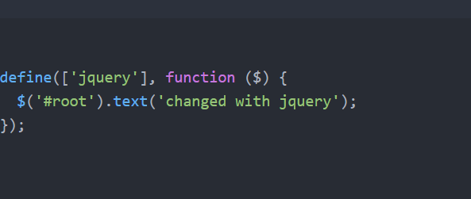Why Magento 2 uses RequireJS
- Manage dependencies
- Optimize the load time of the page.
Fun Fact
A Magento 2.3.0 installation with the Blank Theme loads 161 JS files in an empty home page
RequireJS Config in Magento 2
In Magento 2, each module can have its own RequireJS config that can be placed with the name
"requirejs-config.js" in the path Vendor/Module/view/frontend/
Example Configuration
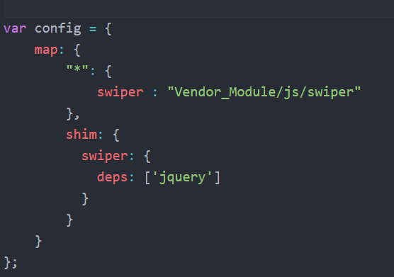Initializing JavaScript in M2
For example Plain jQuery code inside script tags in Magento 2 does not work, so how you initialize Javascript?
- Declarative notation
- Imperative notation
Declarative notation
From M2 docs
In Magento 2, you have two options for specifying declarative notation:
- Using the "data-mage-init" attribute
- Using the "script type="text/x-magento-init" tag
data-mage-init
Use the "data-mage-init" attribute to insert a JS component in a specified HTML element.
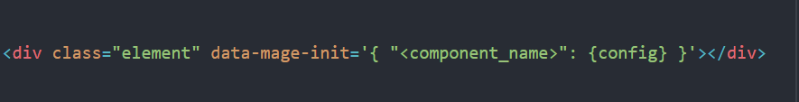script type="text/x-magento-init
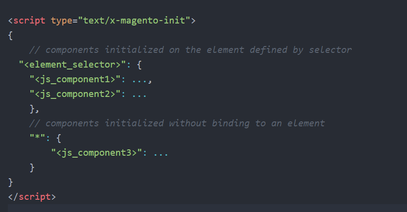Imperative notation
From M2 docs
Use imperative notation in the PHTML template to include raw JavaScript code. This method uses the "script" tag without the type="text/x-magento-init" attribute as shown in the following example:
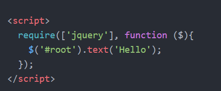RequireJS optimizer
The optimization tool allows you to create bundles from the javascript files so you can go from 160 requests on the server down to 20 or less depending on your configuration
Benefits
- Fewer HTTP requests
- Smaller JS payload because files are getting minified and only bundles that are needed are being loaded
Real world project challenge
Client gets obsessed with google page speed so we need to fix it.
Optimizations already present to the project
- Gzip
- Leverage Browser Cache
- Lazy load all images
- Minified CSS/JS
- TTFB is below 200MS
- font-display: swap being used on fonts
Google page speed score before using the optimizer
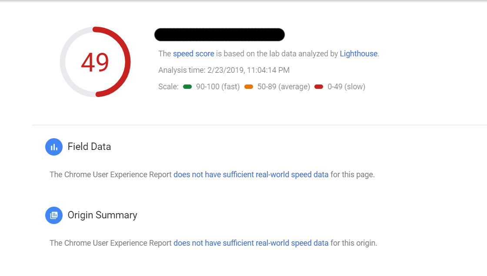Javascirpt file requests before
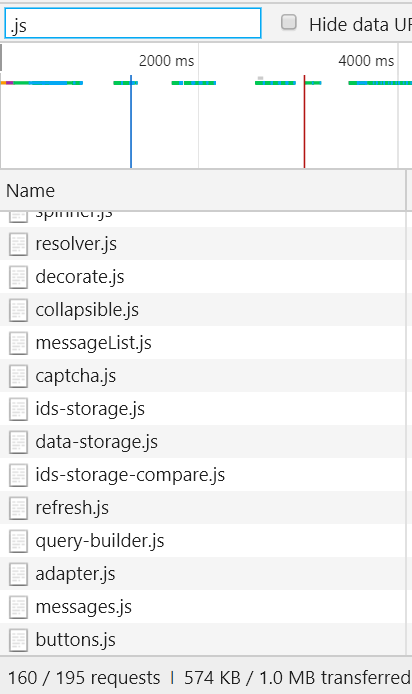How to get started
The configuration of this example is the following:
- Centos 7.6 running apache
- Magento 2.2.7
- Latest update of PHP version 7.1
- PHP 7.1 Zend OP Cache
- NodeJS version 6.16.0
- You need to install requireJS on your server
- You will need nodeJS (for this example 6.16.0)
- (optional) PhantomJS, which allows you to gather the dependencies per page quite easy
build.js
- You will need to create a build.js file on the root directory of your Magento Installation
- Configure all the paths and dependencies inside the build.js file and create your bundles
This is the hardest part
Add RequireJS dependencies, shims, paths, and map
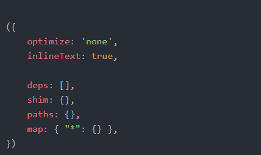Gather up dependencies, shims, paths...
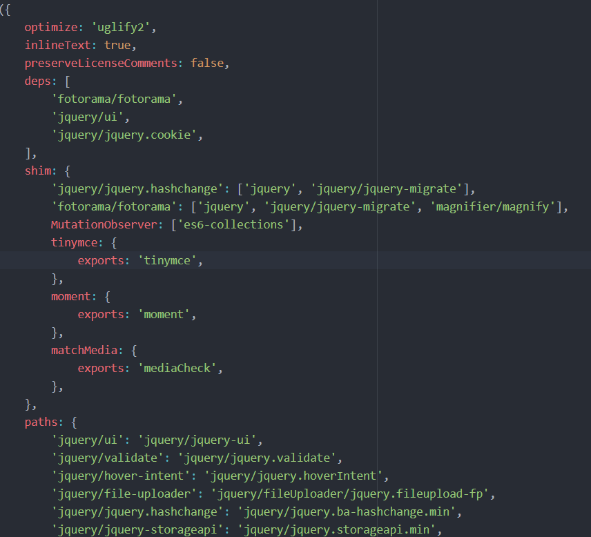... and map...
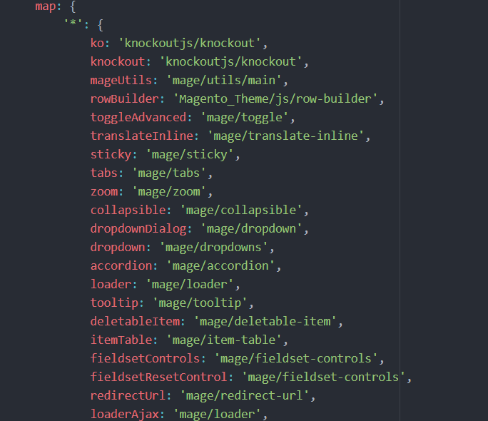... create Bundles...
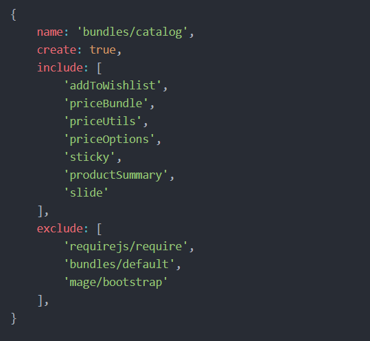... and add this code from M2 Docs so your bundles are used in requireJS
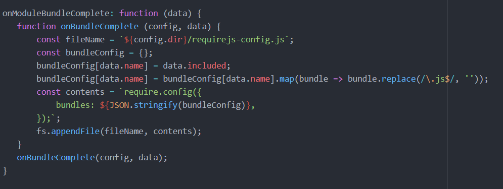As you probably guessed this is a very time consuming process and it would be very time consuming to explain all the steps in detail aswell.
So you can find more about it here: https://devdocs.magento.com/guides/v2.3/performance-best-practices/advanced-js-bundling.html
Almost Done
- You need to add your magento in production mode
- Make sure all the static files are deployed
- Make sure all caches are on
What you do next
You need to move all the static files in a temp folder per store locale
For example for a greek store view, move all the files in pub/static/frontend/VENDOR/Theme/el_GR to pub/static/frontend/VENDOR/Theme/el_GR_temp
Then run the following command from SSH:
"r.js -o build.js baseUrl=pub/static/frontend/VENDOR/THEME/el_GR_temp dir=pub/static/frontend/VENDOR/THEME/el_GR"
We are done
Let's see how many JS requests we make on the server now
We went from 160 requests down to 17 requests